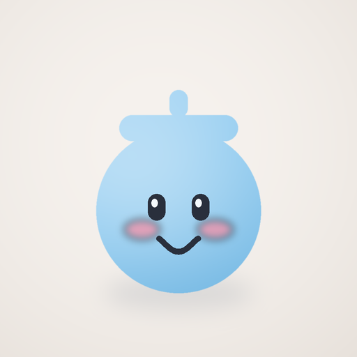

뷰티의 내일, 오늘 읽다
BEAUTY NOW & NEXT 뷰티 업계 뉴 인사이트, 여기 다 모았다!
–
카드뉴스
카드뉴스 목록을 불러오는 중입니다…
BEAUTY NOW & NEXT 뷰티 업계 뉴 인사이트, 여기 다 모았다!
카드뉴스 목록을 불러오는 중입니다…
이 저장소(konghwanhee/but)의 Contents: Read and write 권한만 가진 Fine-grained token을 넣으면, GitHub에 저장 버튼 한 번으로 data/{id}.json이 바로 커밋됩니다.
토큰은 이 브라우저(localStorage)에만 저장되고 다른 곳으로 보내지 않습니다. 넣지 않아도 편집·PNG 저장·JSON 내보내기는 모두 동작합니다.
@butfriends — 뷰티·코스메틱·에스테틱 산업과 성분을 다루는 4개 챕터 매거진
평일 17:00 제작 → 끼릿 검수 → 삐꾸 보완 → 결재 즉시 5분 업로드
더마 코스메틱 · 국내 뷰티 이슈 포함
4부작 주엔 토 08:00 포함, 테크 휴재
토 10:00 주간 제안 → 주말 일괄 제작
성분 / 제형 / EBD 원리·기전 심층
B2C 화제 이슈 · 브리핑 후속 가벼운 이슈 수시 제안 → 결재 즉시 5분 업로드
결재(approved: true) 후 업로드는 삐꾸 단독 5분 자동 감지 실행

끼릿 · 삐꾸 · 환희